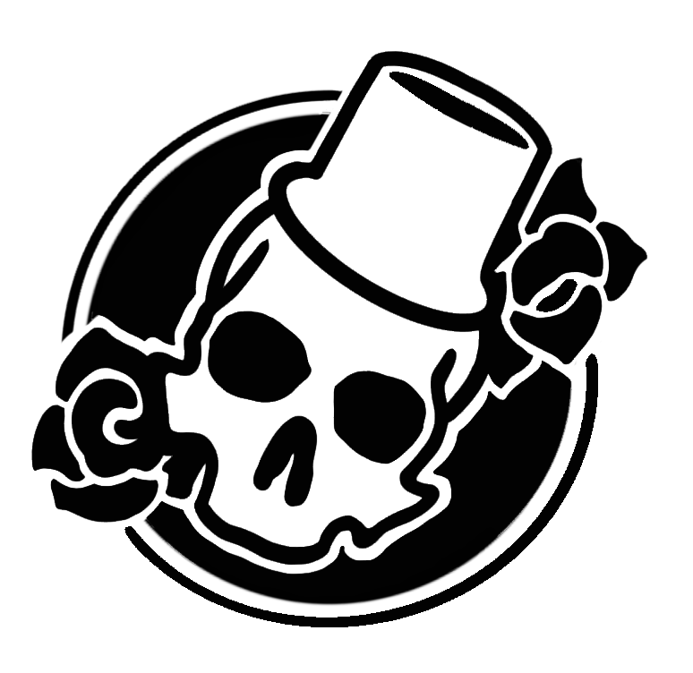

Les tatouages des archives prennent forme dans la forêt. Approchez-vous pour découvrir leurs photographies.
Explorez les tatouages des archives, interprétés en volume et en mouvement. Chaque création vous mène à sa photographie originale.
Cliquez dans le monde pour capturer la souris. Avancez avec W A S D, regardez avec la souris, courez avec MAJ. Visez un animal, une fleur ou une sculpture. Cliquez ou appuyez sur E pour voir le tatouage correspondant. ÉCHAP libère la souris.
Sur téléphone, utilisez le joystick en bas à gauche et glissez du doigt sur la scène pour regarder autour de vous.
Choisissez un point sur la mini-carte ou un nom dans la liste des tatouages pour rejoindre ce motif.